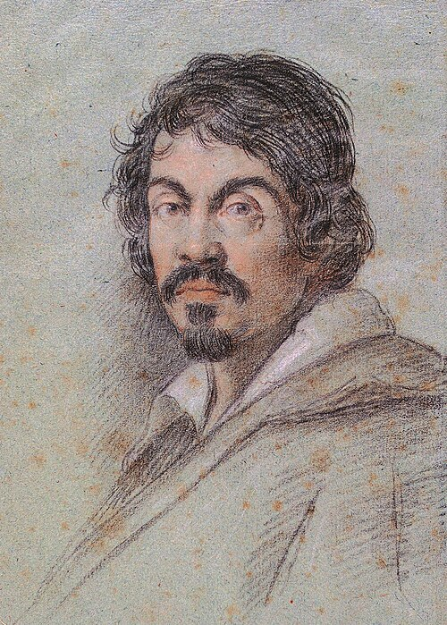
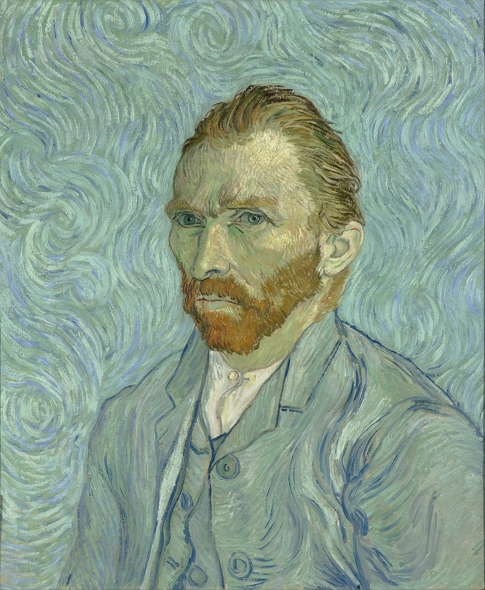
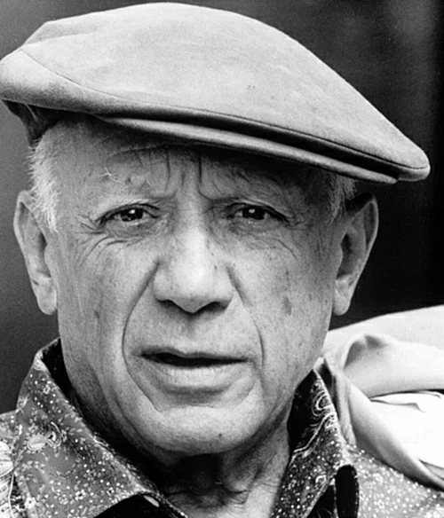
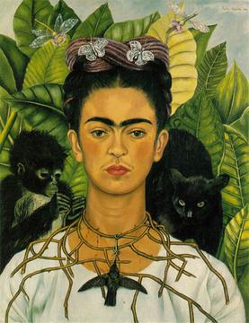
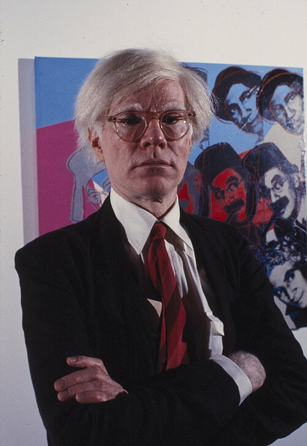

Leonardo da Vinci
The ultimate Renaissance polymath. His work explores the intersection of human anatomy, scientific precision, and ethereal beauty.
ART

The ultimate Renaissance polymath. His work explores the intersection of human anatomy, scientific precision, and ethereal beauty.
ART
The master of dramatic shadows. His pioneering use of chiaroscuro brought a visceral, high-contrast intensity to Baroque painting.

An emotional powerhouse of Post-Impressionism. His bold colors and expressive brushwork redefined how we perceive light and movement.

The revolutionary of form. By co-founding Cubism, he deconstructed traditional perspectives and challenged the very nature of reality.

The icon of identity and resilience. Her deeply personal surrealism blended folk art with psychological depth and raw emotion.

The Pop Art visionary. He bridged the gap between commercial culture and fine art, turning the mundane into the monumental.
